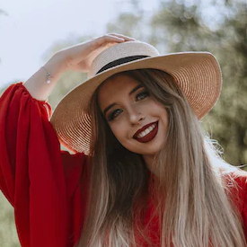
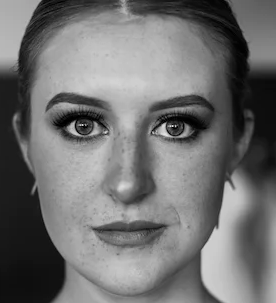
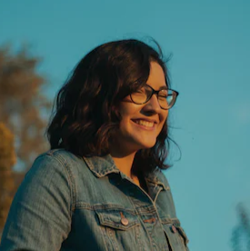

Agustina
"Quiero agradecer a Bernier Eventos por hacer de nuestro evento corporativo un éxito rotundo. Alan y su equipo demostraron una profesionalidad y un talento excepcionales en cada etapa del proceso. Desde el principio, Alan comprendió a la perfección nuestra visión y supo cómo plasmarla en la ambientación. El lugar se transformó en un espacio elegante y sofisticado que reflejaba la imagen de nuestra empresa. Los detalles cuidadosamente seleccionados, como la iluminación y los elementos decorativos, crearon una atmósfera acogedora y atractiva para nuestros invitados. Además, el equipo de Bernier Eventos fue extremadamente organizado y eficiente. Se encargaron de cada aspecto logístico y se aseguraron de que todo estuviera listo a tiempo. Su profesionalismo y atención al detalle nos brindaron tranquilidad y nos permitieron disfrutar plenamente del evento. Recomendaría sin dudarlo a Bernier Eventos para cualquier evento corporativo. Su habilidad para captar la esencia de una marca y crear una experiencia memorable es impresionante. Estamos agradecidos por su trabajo excepcional y estamos seguros de que seguiremos confiando en ellos en el futuro".Carla
"Quiero expresar mi más profunda gratitud a Bernier Eventos por el increíble trabajo que realizaron en mi boda. Alan y su equipo lograron convertir mi visión en una realidad verdaderamente asombrosa. Desde el primer encuentro con Alan, supe que había encontrado al equipo adecuado. Su pasión y conocimiento en el campo de la ambientación de eventos eran evidentes. Escuchó atentamente mis ideas y me brindó sugerencias creativas que enriquecieron aún más el concepto. El día de la boda, quedé absolutamente maravillada al ver el lugar transformado. Cada detalle fue meticulosamente atendido. La elegancia y la sofisticación se reflejaban en cada rincón. La combinación de colores, las texturas y los arreglos florales crearon una atmósfera mágica que dejó a todos los invitados sin aliento. El equipo de Bernier Eventos fue excepcional en todos los aspectos. Su profesionalismo, eficiencia y atención al detalle fueron encomiables. Siempre estuvieron disponibles para responder preguntas y ajustar cualquier aspecto necesario. Recomendaría a Bernier Eventos a cualquier persona que desee hacer de su evento un momento especial y memorable. No puedo agradecer lo suficiente a Alan y a su equipo por hacer de mi boda un sueño hecho realidad".Luciano
Quiero expresar mi más sincera satisfacción por el excelente servicio que recibí de Bernier Eventos. Recientemente organicé un evento importante y decidí confiar en ellos para encargarse de la ambientación. Debo decir que fue una elección acertada en todos los sentidos. Desde el primer contacto con Alan Bernier, el propietario de la empresa, quedé impresionado por su profesionalismo y dedicación. Alan se tomó el tiempo para entender mis necesidades y preferencias, y me ofreció opciones creativas y personalizadas que se ajustaban perfectamente a lo que tenía en mente. El día del evento, el equipo de Bernier Eventos llegó puntualmente y desplegó su talento y experiencia en cada detalle. La decoración era simplemente espectacular. Cada rincón estaba cuidadosamente diseñado y se respiraba un ambiente mágico. Los colores, las luces y los arreglos florales crearon una atmósfera única que impresionó a todos los invitados. Además de la impresionante ambientación, debo mencionar el trato amable y profesional de todo el equipo. Siempre estuvieron dispuestos a atender mis solicitudes y se aseguraron de que todo saliera a la perfección. Recomendaría sin dudarlo los servicios de Bernier Eventos a cualquiera que esté buscando una ambientación excepcional para su evento. Alan y su equipo demuestran un nivel de excelencia que supera las expectativas. Gracias a ellos, mi evento fue inolvidable y recibí elogios de todos los asistentes. ¡No puedo estar más satisfecho con el resultado!

Elizabeth
"Quiero agradecer de corazón a Bernier Eventos por hacer de la fiesta de los 15 años de mi hija un evento inolvidable. Alan y su equipo superaron todas nuestras expectativas y crearon un ambiente mágico que dejó a todos los invitados impresionados. La decoración era simplemente espectacular. Cada detalle fue cuidadosamente seleccionado para reflejar la personalidad y los gustos de mi hija. Desde los arreglos florales hasta la iluminación, todo estaba en armonía y creaba una atmósfera de ensueño. Los colores vibrantes y los detalles elegantes realmente hicieron que el lugar se destacara. Pero no solo fue la ambientación, el equipo de Bernier Eventos fue excepcional en su trato y atención. Desde el primer momento, demostraron una gran disposición para escuchar nuestras ideas y adaptarse a nuestras necesidades. Fueron profesionales, amables y estuvieron atentos a cada detalle. Recomendaría a Bernier Eventos a cualquier persona que desee una fiesta de 15 años verdaderamente memorable. Su dedicación y pasión por su trabajo se reflejan en los resultados. Gracias a ellos, mi hija tuvo una celebración mágica que recordará para siempre".

Ximena
"Quiero expresar mi gratitud a Bernier Eventos por el magnífico servicio que brindaron en nuestro cocktail. Alan y su equipo realmente se lucieron y crearon un ambiente sofisticado y elegante que cautivó a todos los asistentes. La ambientación era simplemente excepcional. Desde la iluminación hasta los detalles decorativos, todo estaba en perfecta armonía y creaba una atmósfera acogedora y glamorosa. Los espacios estaban bellamente adornados y se prestaban para conversaciones animadas y momentos especialesspanGabriel
"No puedo expresar lo encantado que estoy con los servicios de Bernier Eventos. Recientemente organicé una fiesta de aniversario para mi esposa y decidí confiar en ellos para crear un ambiente romántico y elegante. Desde el principio, Alan y su equipo demostraron un profesionalismo excepcional y una atención meticulosa a los detalles. La decoración que prepararon superó con creces mis expectativas. Cada elemento estaba cuidadosamente seleccionado y arreglado, desde las flores exquisitas hasta las luces ambientales. El resultado fue simplemente mágico. Mi esposa quedó asombrada y nuestros invitados quedaron maravillados por la belleza del lugar. Pero no solo se trató de la ambientación. El equipo de Bernier Eventos fue extremadamente amable y servicial durante todo el proceso. Estuvieron dispuestos a escuchar mis ideas y sugerencias, y se aseguraron de que todo estuviera en su lugar a tiempo. Su profesionalismo y atención al cliente son dignos de elogio. Recomendaría a Bernier Eventos sin dudarlo. Si buscas un servicio de ambientación de primer nivel y un equipo comprometido, no busques más. Alan y su equipo se encargarán de hacer de tu evento una experiencia inolvidable".